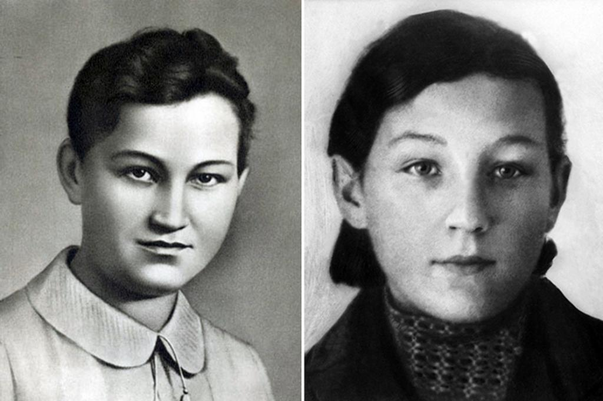

Перед Великой Отечественной войной Зоя училась в 201-й московской средней школе. Осенью 1941 г. она была десятиклассницей. В октябре 1941 г., в самые тяжелые для обороны столицы дни, когда не исключалась возможность захвата города врагом, Зоя оставалась в Москве.